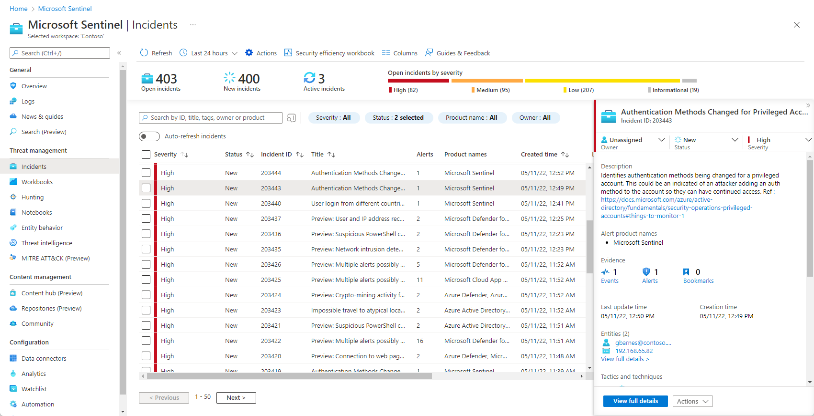

Enterprise SIEM Monitoring • Incident Investigation • Threat Hunting • KQL Query Development • Microsoft Defender XDR Integration
Microsoft Sentinel is Microsoft's cloud-native Security Information and Event Management (SIEM) and Security Orchestration, Automation, and Response (SOAR) platform. It enables organizations to collect, analyze, detect, investigate, and respond to security threats across on-premises, cloud, and hybrid environments.
As a Security Analyst, I use Microsoft Sentinel to monitor enterprise security events, investigate incidents, perform threat hunting using Kusto Query Language (KQL), analyze logs from multiple data sources, and support incident response activities.
My hands-on experience includes creating analytics rules, investigating security alerts, correlating events, performing log analysis, integrating Microsoft Defender XDR and Azure services, and supporting incident response activities.
Enterprise SIEM Monitoring & Incident Investigation

This project demonstrates my practical experience working with Microsoft Sentinel in a Security Operations Center (SOC) environment. The objective was to monitor enterprise security events, investigate incidents, perform threat hunting, and improve the organization's security posture using Microsoft's cloud-native SIEM platform.
Throughout this project, I analyzed security alerts generated from multiple data sources, validated incidents, correlated events, executed Kusto Query Language (KQL) queries, and collaborated with security teams to investigate and respond to suspicious activities.
The project also involved integrating Microsoft Defender XDR, Azure Monitor, and Log Analytics to provide centralized security monitoring and faster incident investigation.
By combining SIEM monitoring, threat intelligence, incident response, and proactive threat hunting, this project helped strengthen enterprise visibility and improve security operations.
Security Analyst
Enterprise SOC Operations
Microsoft Sentinel (SIEM)
Monitoring, Investigation & Threat Hunting
Microsoft Azure & Microsoft Defender XDR
KQL • Log Analysis • MITRE ATT&CK
Activities performed while working with Microsoft Sentinel
Investigated security alerts, validated incidents, identified attack patterns and supported remediation.
Used Microsoft Sentinel and KQL queries to proactively identify suspicious behaviour across enterprise systems.
Analyzed security logs from multiple data sources to investigate anomalies and correlate events.
Continuously monitored Microsoft Sentinel incidents, analytics rules and security alerts.
Security tools and Microsoft technologies used throughout the project
✔ Improved visibility into enterprise security events.
✔ Performed threat hunting using Microsoft Sentinel.
✔ Investigated incidents using KQL queries.
✔ Reduced investigation time through centralized log analysis.
✔ Supported security operations aligned with enterprise security best practices.
Microsoft Sentinel
SIEM Monitoring
Threat Hunting
Incident Response
Microsoft Defender XDR
Azure Security
Security Operations Center (SOC)
Business value and security improvements achieved through Microsoft Sentinel
Centralized monitoring of enterprise security events enabled faster detection of suspicious activities across multiple environments.
Investigated security incidents using Microsoft Sentinel, Microsoft Defender XDR and KQL to support rapid response.
Performed proactive threat hunting using log analytics, KQL queries and Microsoft security technologies.
Correlated security events from multiple data sources to improve visibility and investigation efficiency.
Integrated Microsoft Sentinel with Azure services, Microsoft Defender XDR and Log Analytics to strengthen enterprise cloud security.
Supported enterprise security practices aligned with industry standards including NIST SP 800-53 and SOC 2.
This page showcases my hands-on experience with Microsoft Sentinel, where I monitor enterprise security events, investigate incidents, perform threat hunting using KQL, analyze security logs, and support incident response within a Security Operations Center (SOC) environment integrated with Microsoft Defender XDR and Microsoft Azure.
Enterprise Security Operations • SIEM Monitoring • Threat Hunting
Microsoft Sentinel incident investigation process followed during security operations
Monitored Microsoft Sentinel analytics rules, incidents, and security alerts generated from multiple enterprise data sources.
Investigated alerts using Microsoft Sentinel, Microsoft Defender XDR, Log Analytics and Kusto Query Language (KQL).
Correlated security events, identified suspicious activities and performed proactive threat hunting across enterprise environments.
Validated incidents, documented findings, collaborated with security teams, and supported remediation activities.
End-to-end Microsoft Sentinel incident lifecycle followed during Security Operations Center (SOC) monitoring.
Microsoft Sentinel Analytics Rules
Continuously monitored enterprise security alerts, analytics rules, incidents, and log data collected from Microsoft Defender XDR, Azure Monitor, Windows Security Events, and other connected enterprise data sources.
Microsoft Defender XDR
Investigated security alerts by analyzing incident timelines, correlating security events, validating malicious activities, and identifying attack patterns using Microsoft Defender XDR.
Kusto Query Language (KQL)
Executed KQL queries to analyze security logs, identify Indicators of Compromise (IOCs), investigate suspicious behaviour, and proactively hunt for advanced threats across the environment.
Security Operations Center (SOC)
Validated confirmed incidents, documented findings, collaborated with security teams, supported containment and remediation activities, and completed the incident response lifecycle.
Enterprise Security Operations
Improved analytics rules, reduced false positives, enhanced detection logic, documented lessons learned, and strengthened the organization's overall security posture through continuous monitoring and optimization.
Microsoft technologies and security tools used throughout this project